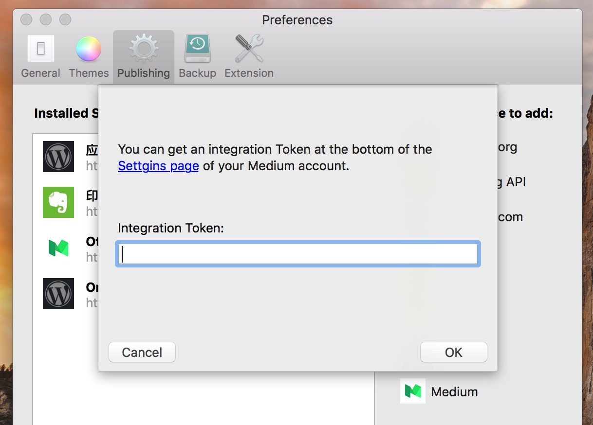
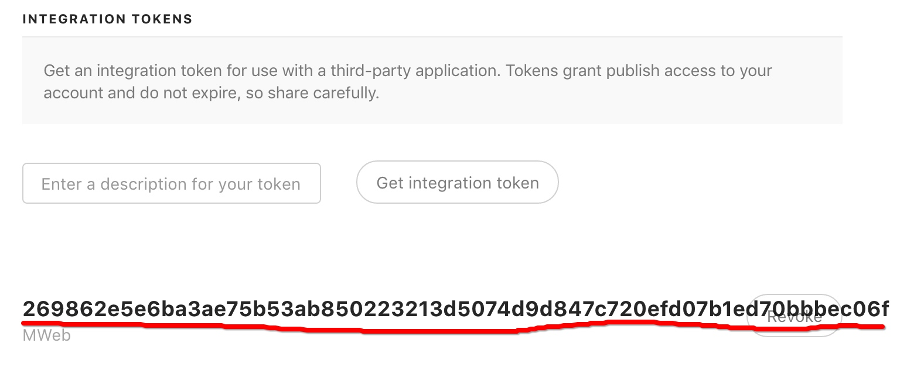
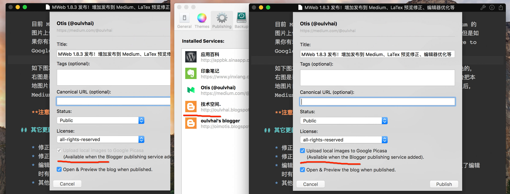

MWeb 1.8.3 发布！增加发布到 Medium、LaTex 预览修正、编辑器优化等
发布到 Medium 详细说明
在 Preferences - Publishing 可增加发布到 Medium 服务，点击后会出来以下画面：

点 Settings page （oops! 图中打错字！）进入 Medium 设置，拉到最下面，会发现 Intgration Tokens，填入想要的名称标识，并点 Get integartion token 按钮，就会得到一串字符，复制并返回 MWeb，粘贴到 Integration Token 字段，并点 OK 按钮即可，如下图为所说的字符串。

目前 Medium 的 API 还不支持更新，所以现在只支持发布，然后 Medium 的图片上传 API 也还没开放，所以正常情况下也不支持本地图片自动上传，但是如果你有增加了发布到 Blogger 的服务，可以勾选 Upload local image to Google Picasa 这个选项，这样就支持本地图片自动上传了。
如下图左边是没有增加发布到 Blogger 服务的情况，可以看到选项是灰色的，右边是已经增加了发布到 Blogger 服务的情况，当勾选之后，MWeb 就会把本地图片自动上传至 Picasa，然后再发布到 Medium。发布到 Medium 之后，Medium 会自动把 Picasa 的图片保存到自己的服务器。

注意：发布到 Medium 的功能 Lite 版是没有的。
其它更新
- 修正 LaTex 编辑器内预览卡死、$$ 语法不出现公式问题。
- 修正脚注如果出现第二条引用会出错问题。
- 编辑器性能提升了点，现在编辑十万多字的文档比之前好了很多。也修正了编辑时有时候会跳动的 Bug。
- 其他小修正。